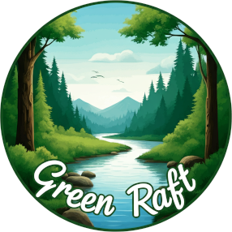

Overview
Purpose
This website advertises people for the whitewater rafting activities and makes people experience the fun of rafting. It will show our company contact details, our company's accomplishments, our program, and some activity photos. It can let a lot of people know our company through the Internet, and it can facilitate people's process to schedule a journey and give our company a good profile. When more and more people know us through the Internet, we can make more money, which is able to make more people experience the joy of rafting.
Audience
This site's main audience is the people that love nature and relaxation, which can help them to calm their minds, and some adventures and thrill-seekers to satisfy their excitement, and the people who love capturing photos and videos, including Youtubers and some streamers; some people love to work out, and some people love to vacation with their families. Their income ranges from low to high, and they are all children, young people, or middle-aged people. The site will use green, white, and blue colors and the font that shows freedom. It will contain a lot of nature views, family scenes, and a clear feeling to attach those people I mentioned above. Regarding the needs that haven't been met, I think thrill-seekers and some adventurers will find our site kind of peaceful and maybe less attractive to them. They will use mobile devices primarily to access the website because it is the most popular. Followed by desktop, I think this is the popular device for young people; last is the laptop.
Branding
Website Logo
Style Guide
Color Palette
Palette URL:
https://coolors.co/7cb518-124b22-679436-0077b6| Primary | Secondary | Accent 1 | Accent 2 |
|---|---|---|---|
| #7cb518 | #124B22 | #679436 | #0077b6 |
Typography
Heading Font: Fugaz One
Paragraph Font: Josefin Sans
Normal paragraph example
The best Whitewater Rafting in Colorado, White Water Rafting Company offers rafting on the Colorado and Roaring Fork Rivers in Glenwood Springs. Since 1974, we have been family owned and operated, rafting the Shoshone section of Glenwood Canyon and beyond.
Colored paragraph example
Trips vary from mild and great for families, to trips exclusively for physically fit and experienced rafters. No matter what type of river adventures you are seeking, White Water Rafting Company can make it happen for you.
Navigation
Site Map
Wireframes
Home